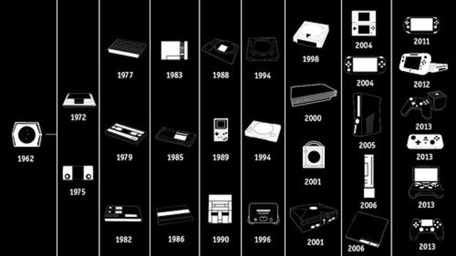

Primera generación: Si bien los primeros juegos de computadora aparecieron en la década de los 1960, éstos utilizaban pantallas vectoriales, no de vídeo analógico. No fue hasta 1972 cuando se lanzó la primera videoconsola de sobremesa por la compañía electrónica Magnavox. La Magnavox Odyssey, fue creada por Ralph Baer, considerado como el padre de los videojuegos. La Odyssey tuvo un moderado éxito, sin embargo, con el lanzamiento del juego arcade Pong de Atari, comenzaron a popularizarse los videojuegos, el público comenzó a mostrar interés ante la nueva industria. En el otoño de 1975, la compañía Magnavox, cede ante la popularidad del Pong, se cancela el proyecto Odyssey, ya que el público solo jugaba al Pong y Hockey en la Odyssey 100. Una posterior actualización de la consola Odyssey 100, la 200, llevaba incorporada una pantalla de puntuación, permitía hasta 4 jugadores, y se vendía junto con un tercer juego: Smash. Casi simultáneamente, la cadena de centros comerciales Sears compró los derechos del sistema Atari Pong y lo introdujeron en el mercado de consumo bajo el nombre de Sears-Telegames. Al igual que en el mercado arcade, el mercado pronto fue inundado por consolas clones de Pong y juegos derivados.
Segunda generación: En esta generación resaltaron Atari 2600, Colecovision, Mattel Intellivision y la Atari 5200. El dominio absoluto fue de Atari, aunque tuvo al menos dos rivales destacables. Colecovision con el doble de colores que la 2600 e Intellivision de Mattel que por primera vez en la historia incluye una CPU de 16 bits.
Tercera generación Tras la crisis de los videojuegos, el mundo de las consolas prácticamente es un monopolio japonés. En esta generación las consolas como la NES (Nintendo Entertainment System) , Famicom (así se llamaba la NES en Japón) o Hyundai Comboy (llamada así en Corea del Sur) y la Sega Master System tenían 8 Bits. La NES domina prácticamente sola hasta la llegada de Mega Drive en 1988.
Cuarta generación En 1987 NEC y Hudson, ponen la consola PC Engine en Japón o Turbografx en el resto del mundo, que tienen una CPU de 8 bits pero un chip gráfico de 16 bits. En 1988 Sega presenta su consola con una CPU de 16 bits conocida como Sega Genesis en América y Sega Mega Drive en Europa y Asia. En 1990 Nintendo saca su consola de 16bits Super Nintendo y este mismo año, la productora de arcades SNK saca Neo-Geo, la consola más potente de esta generación llamada el Rolls Royce de las consolas por su elevado precio. Esta generación destaca, por los chips gráficos añadidos al cartucho, como el Super FX y SVP y las ampliaciones de hardware de Mega Drive: Mega CD y Sega 32X. Aparecen conceptos como multitarea, multimedia, gráficos vectoriales, etc... Super Nintendo es la consola más vendida con 49 millones de unidades, aunque la más vendida en Europa es Mega Drive.
Quinta generación En el período de la quinta generación existen muchos fabricantes de juegos que presentaron diversos equipos con características parecidas a las de un computadora. Estos fabricantes comenzaron a presentar títulos en un entorno 3D, aprovechando la mayor capacidad de hardware de los equipos. A esta generación se la conoce como la "era de los 32 bits", aunque ocasionalmente algunas personas se refieren a ella como la era de los 64 bits puesto que Nintendo lanzaría dos años más tarde un sistema que rompería este apodo. Se trata de la consola Nintendo 64, a la que raramente se llama también la "era 3D". Se trata de una generación que supuso el paso de los 2D a los entornos tridimensionales 3D, que comenzó en el año 1994 cuando Sega lanzó su Sega Saturn y Sony su PlayStation, la cual supuso la irrupción de esta compañía en el mundo de los videojuegos. Básicamente el mercado estaba dominado por tres consolas, Nintendo 64 (1996), la cual contó con algunos de los videojuegos más emblemáticos de la época y de la historia del ocio electrónico, como el inolvidable Super Mario 64 (juego de lanzamiento que, en consecuencia, cumple también 25 años), F-Zero X, Perfect Dark o The Legend of Zelda: Ocarina of Time, entre otros. Del mismo modo, vio nacer sagas como Super Smash Bros. que siguen siendo grandes éxitos de ventas en la actualidad,Sega Saturn (1994) que fue la consola más discutida de SEGA, que sin embargo gozó de un gran éxito en Japón y es para muchos una gran desconocida, aunque atesora una larga lista de grandes juegos. Por su parte Sony, con la consola PlayStation (1994) donde los juegos eran los primeros que se lanzaban en CD. En el transcurso de una década, PlayStation se convirtió en la primera consola de juegos de la historia en vender más de 100 millones de unidades en todo el mundo y, a lo largo de su vida, llegó a contar con casi 8 000 juegos. La demografía en las ventas de consolas varió considerablemente, pero estas consolas definieron la guerra de consolas de esta era. La 3DO Interactive Multiplayer y la Atari Jaguar fueron también parte de esta era, pero su marketing fue pobre y fallaron a la hora de crear impacto. Esta era también vio una versión actualizada de la Game Boy de Nintendo: la Game Boy Color.

Sexta generación: En esta generación, se produjeron equipos con similitudes a la arquitectura de una computadora personal, no obstante, las consolas de sobremesa prescindieron de los cartuchos y utilizan medios de almacenamiento de gran capacidad como el DVD, GD-ROM, GOD. Lo cual hizo que los juegos fuesen más largos y visualmente más atractivos. Además, esta generación también experimenta el videojuego en línea en las consolas y la aplicación de sistemas almacenamiento internos en los equipos como memoria flash y disco duros que son utilizados para guardar datos del videojuego.
Séptima generación Esta generación se caracteriza por la introducción de la tecnología multinúcleo en la unidad central de procesamiento. También está marcada por la integración del formato de disco óptico Blu-ray y los controladores inalámbricos y la detección de movimiento que han "desplazado" el clásico controlador por cable. Otro aspecto importante es la distribución de juegos vía Internet, gracias a la aparición del servicio de banda ancha a nivel mundial. Algunos de los servicios de Internet que dan soporte técnico a los juegos multijugador es la Xbox Live de Microsoft, la PlayStation Network de Sony y la Nintendo WiFi Connection de Nintendo. Otro aspecto importante que caracteriza esta generación a las otras, es la inclusión de chips gráficos sofisticados que ayudan a procesar imágenes reales tal es el caso del procesador digital GPU En esta generación Sega dejó de competir con las principales videoconsolas para dirigirse a un mercado de menor escala con el lanzamiento de su miniconsola Sega Zone que al igual que las demás consolas de la generación, está equipada con sensores de movimiento. En este mismo mercado aparece la miniconsola Zeebo que ofrecía juegos en línea y que más tarde anunciaría el cese de su producción. Vtech llegó a la séptima generación con su V Smile Moniton, una consola que paso en 2008 que Zeebo en precederlo al 1. Únicamente tres compañías se disputan el mercado a gran escala: Nintendo, Sony y Microsoft. Nintendo y Sony son empresas de origen de Japón, mientras que Microsoft es la única empresa de origen de los Estados Unidos que disputa el mercado de videoconsolas a gran escala. A finales del año 2005, la Xbox 360 de Microsoft fue la primera en aparecer en esta generación. En noviembre de 2006, aparecen la Wii de Nintendo y la PlayStation 3 de Sony. Respecto a las ventas, la compañía Nintendo recupera el mercado, gracias al nuevo enfoque con el cual se diseñó la Wii, para así posicionarse en el primer lugar en las ventas de videoconsolas de sobremesa.
Octava generación: Lo destacable de esta generación es el uso de internet como eje central de la funcionalidad de las consolas, esto convertidos en media centers juntando un único aparato, las funciones de consola de juegos y bazar de venta de películas, series de TV y otros contenidos desde el propio aparato. Aunque las generaciones anteriores de videoconsolas normalmente se han sucedido en ciclos de cinco años, la transición de la séptima a la octava generación ha durado más de seis años. La transición es igual de usual en que la consola sobremesa de la anterior generación que tuvo más ventas, la Wii, es la primera en tener sucesora.
Novena generación: Durante esta nueva generación Nintendo, Sony y Microsoft lanzaron sus nuevas videoconsolas. El comienzo de la novena generación se produjo en 2017 con la salida de Nintendo Switch siendo la sucesora de la Wii U, Lo destacable de esta generación es el lanzamiento de consolas cuyo formato de videojuegos es completamente digital, cómo por ejemplo, el Xbox Series S de Microsoft y la versión digital de la PlayStation 5 de Sony, aunque en la anterior generación ya se busco terreno con la Xbox One S all digital. Por otro lado Google decidió lanzar su Stadia el cual sería un mando que se puede usar para jugar juegos en celulares se puede conectar por bluetooth o usar un cable para conectarlo.